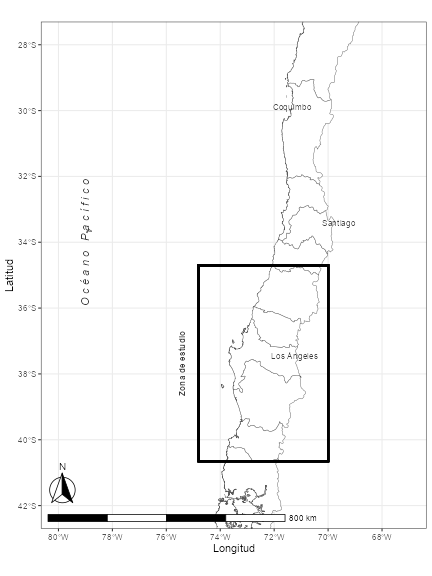
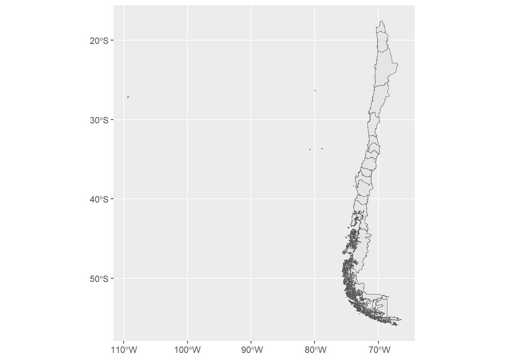
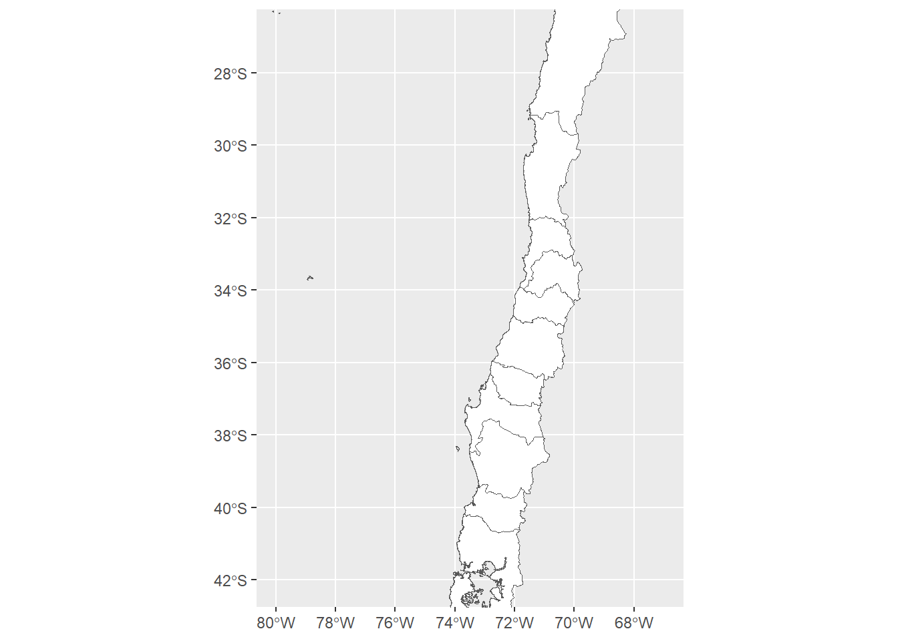
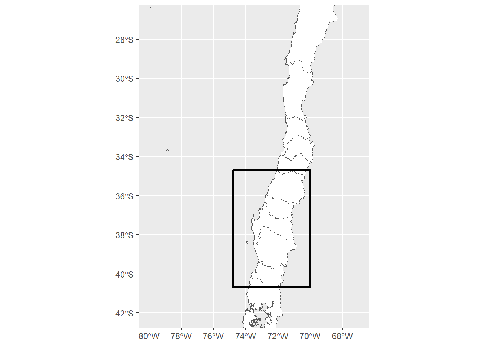
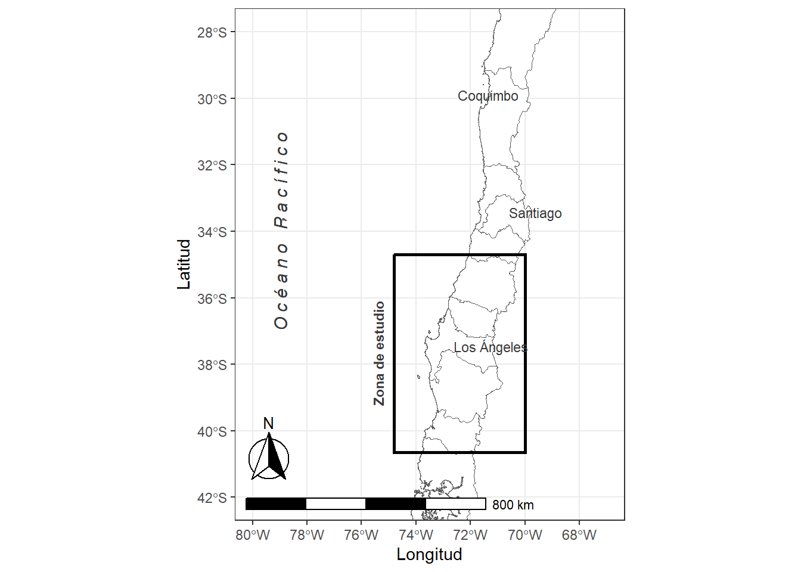

library(readr)
library(ggplot2)
Es común mostrar dentro de la metodología de un trabajo el área geográfica de donde se realizó el estudio. Si no estas familiarizado con datos espaciales, aquí te muestro una alternativa de cómo mostrar la zona de estudio (en lugar de ir a GoogleMaps y sacar una screenshot).
Primero cargamos las librerias, readr para importar los datos y ggplot2 para graficar.
Según la zona que deseas mostrar y el nivel de detalle (por ejemplo los límite de los estados/regiones o nombres de ciudades) requerirás de determinadas fuentes de datos. Los paquetes ggmap y rnaturalearth incluyen conjuntos de datos para plotear el mundo con los límites internacionales, pero a nivel de estado solo está disponible para Estados Unidos. Por lo anterior, en este post trabajo con los datos de GADM.
Para este ejemplo, trabajo con datos de Chile en formato sf provenientes de https://www.gadm.org/download_country_v3.html. Puedes descargar los datos para otro país cambiando la URL del siguiente código.
Descargamos los datos y graficamos:
cl <- readRDS(url("https://geodata.ucdavis.edu/gadm/gadm3.6/Rsf/gadm36_CHL_1_sf.rds", "rb"))
#class(cl) sf
ggplot(data = cl) +
geom_sf()
Ya tenemos el mapa completo de Chile y con sus regiones delimitadas. Para este ejemplo voy a determinar la zona de estudio desde la Región del Maule hasta la Región de los Ríos, pero tambíen quiero mostrar los alrededores para que el lector pueda ubicarse. Para esto voy a cambiar los límites de la gráfica, de manera de hacer un “zoom” en el mapa. Los límites de la gráfica se pueden modificar filtrando el conjunto de datos según las regiones que queremos mostrar o modificar los parámetros xlim y ylim con un par de coordenadas. Esta última alternativa es más artesanal pero también una solución simple si no tienes experiencia con objetos sf.
El par de coordenadas las puedes obtener desde OpenStreetMap o GoogleMaps.
El límite superior lo determiné en la coordenada (-27,-80) y el inferior en (-42,-67). En ggplot() queda de la siguiente forma:
ggplot(data = cl) +
geom_sf(fill ="white")+
coord_sf(xlim = c(-67, -80), ylim = c(-42, -27))
Con geom_rect() dibujo un rectángulo:
ggplot(data = cl) +
geom_sf(fill ="white")+
coord_sf(xlim = c(-67, -80), ylim = c(-42, -27))+
geom_rect(xmin = -74.8, xmax = -70, ymin = -40.65, ymax = -34.7,
fill = NA, colour = "black", size = 1)Warning: Using `size` aesthetic for lines was deprecated in ggplot2 3.4.0.
ℹ Please use `linewidth` instead.
Para finalizar, con la librería ggspatial y su función annotation_north_arrow() se puede incluir una flecha. Y de manera rústica agrego manualmente algunos nombres de ciudades de referencia por medio de la función annotate().
library(ggspatial)
ggplot(data = cl) +
geom_sf(fill = "white") +
annotation_scale(location = "bl", width_hint = 0.7) + # añadir barra de escala
annotation_north_arrow(location = "bl", which_north = "true", # añadir flecha
pad_x = unit(0, "in"), pad_y = unit(0.3, "in"),
style = north_arrow_fancy_orienteering) +
coord_sf(xlim = c(-67, -80), ylim = c(-42, -28))+ #limite del mapa
geom_rect(xmin = -74.8, xmax = -70, ymin = -40.65, ymax = -34.7, # añado un rectángulo de bordes negros
fill = NA, colour = "black", size = 1)+
annotate(geom = "text", label = "O c é a n o P a c í f i c o", # agrego texto para indicar zonas
x = -79, y = -34, fontface = "italic",
color = "grey22", size = 4, angle = 90)+
annotate(geom = "text", label = "Coquimbo", # agrego ciudades
x = -71.34, y = -29.9,
color = "grey22", size = 3)+
annotate(geom = "text", label = "Santiago",
x = -69.60, y = -33.43,
color = "grey22", size = 3)+
annotate(geom = "text", label = "Los Ángeles",
x = -71.24, y = -37.46,
color = "grey22", size = 3)+
annotate(geom = "text", label = "Zona de estudio",
x = -75.4, y = -37.675, fontface = c("bold"), angle = 90,
color = "grey22", size = 3)+
xlab("Longitud") + ylab("Latitud")+ # título de los ejes
theme_bw()
Guardamos la gráfica con ggsave():
ggsave("mapa.png", width = 6, height = 8, dpi = "screen")También puedes mostrar el área de estudio de manera interactiva y simple mediante Leaftle:
library(leaflet)
leaflet() %>% addTiles() %>%
setView(-77.344, -34.597, zoom = 5) %>%
addRectangles(
lng1= -74.575, lat1=-34.886,
lng2= -70.192, lat2=-40.830,
fillColor = "transparent") %>%
addProviderTiles(providers$Stamen.Toner)